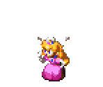

ABOUT

An energetic and positive individual looking for an entry‑level specialty sales position where I can quickly learn to add value to the sales team. My communication and interpersonal skills provide a strong foundation for developing sales expertise.
Motivated, team‑oriented, and committed to a strong work ethic — I’m seeking an opportunity to prove myself and grow with your company.
EXPERIENCE
Assistant Director & Head Coach
Team Member
Bath & Body Works — Operations
- Processing shipment
- Taking inventory
- Selling to customers
- Running trash
- Organizing/sorting marketing materials
- Restocking fixtures and walls
- Fulfilling BOPIS orders
- Processing returns/exchanges
- Transporting inventory offsite
Dayton Academy Allstars — Coaching
- Taking team attendance
- Cleaning routines & modifying formations
- Wrapping/taping athlete injuries
- Choreographing motions, dances, transitions
- Supporting athlete mental health
- Screaming so much I lose my voice
PROJECTS
VIS 1100: Personas
The point of this project was to build four different personas based off of real people that we interviewed at the library, and then create professional résumé layouts expressing their wants, needs, frustrations, references, and more. The way that I approached this project was to build a simple and clean layout that is easy to read and convey the important information across effectively. Although I kept it simple, I still wanted to add some flair and a personality to be resumes, and I think it helps differentiate who they are as a person just by glancing over the page. What I learned in this project is that more is not always better. Simple and clean is sometimes the best way to go. I also learned a lot about the people in our community and why the library is so important for them. I think this project gave me a lot of perspective about different people and their lives and what they experience.
VIS 1330: Clear is Kind
VIS 1330: Still Becoming
The goal of this project was to ask AI to build a code for us, that we could then convert into our own personal website. We were asked to describe our ideas and thought processes to AI, and ask it to build a website code based off of the information we had given it. The way that I approached this subject was by building a few mood boards, and exploring which of them really spoke to me, and what bits I wanted to pull from them. visualizing my personal style to the AI. I love pink, retro, Nintendo, liminal kind of vibes. After deciding on my styles, I then described them to AI as best as I could. After the base of the website was built, I searched and pulled PNG images from the web and asked AI to place the images, and told it specifically where I wanted the images on the website. What I learned in this project, is how I can pin-point and group themes together and pull things in common from multiple different sources, as well as how easily AI can build something. AI can be a great tool to build and assist in building a website, but there’s still quite a lot that depends on human input. I still had to go and clean up a lot of the code that AI gave me, things were in wrong spots or sometimes there were completely useless lines of code just mixed with everything else.
EDUCATION
High School Graduate
SKILLS
Customer Service
- Point‑of‑sale systems
- Customer interaction
- Professional communication
Operations
- Inventory procedures
- Shipment processing
- Store organization
Technical
- Microsoft Office
- Basic digital tools
CONTACT
Interested in connecting? I’d love to talk about opportunities.
- Email: gltuck2005@gmail.com